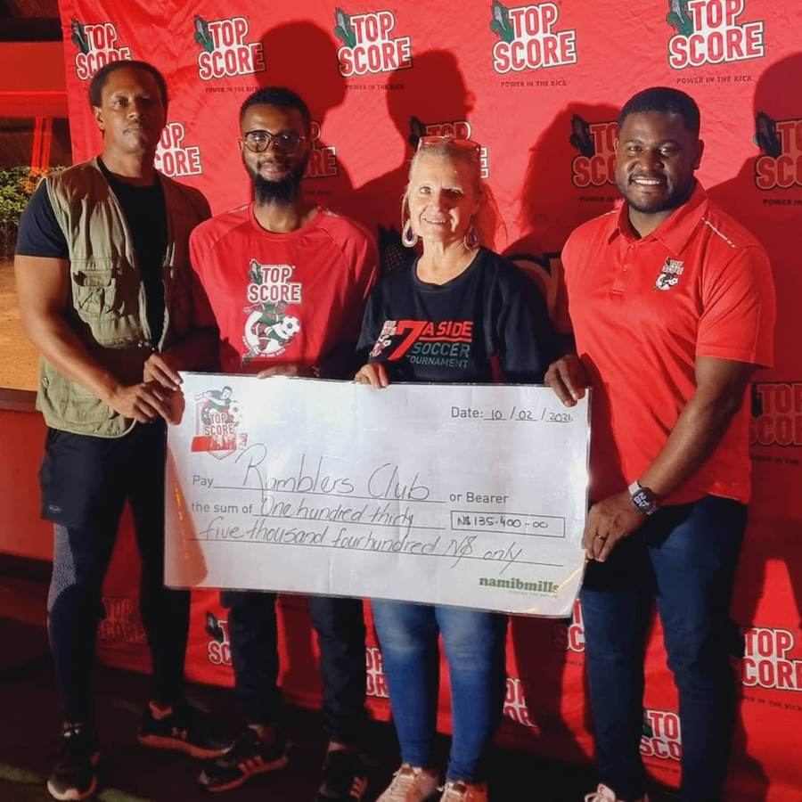
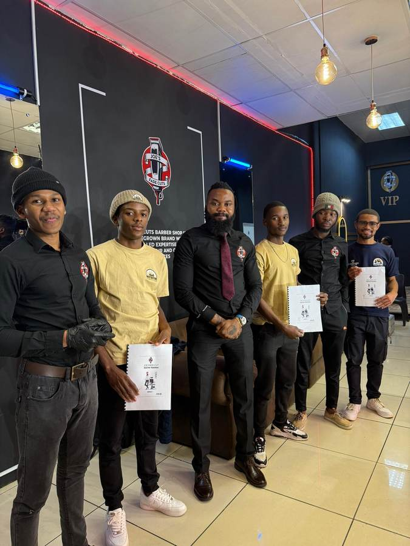
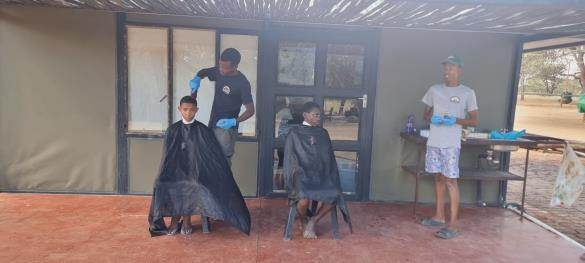
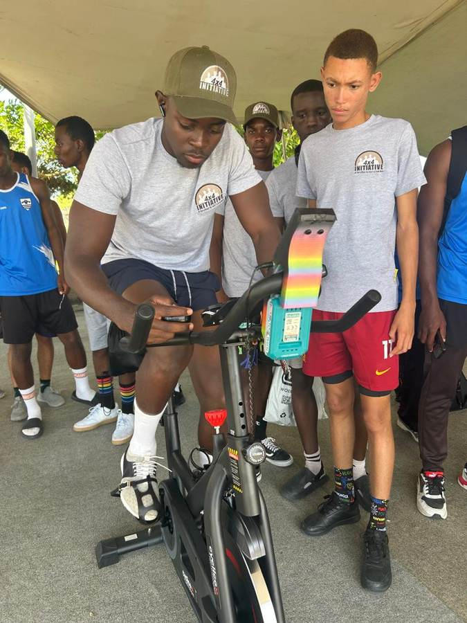
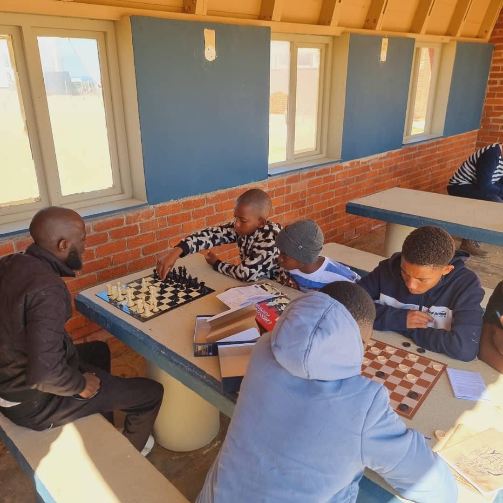

Skills & Sport
From the football pitch to the barber's chair, this is where boys build a trade, a team, and the discipline that carries into everything else. Vocational excellence and economic independence, two of the Seven Pillars, live here.
Champions on the pitch, leaders off it
The Foundation fields its own football club, using the game as what the 7 Pillars call a Special Purpose Vehicle: a way to reach boys through something they already love, then use that platform for leadership value talks and mental health conversations. Soccer tournaments alone have put the Foundation's message in front of over 1,000 people.


The Training Academy has officially resumed
This is more than training, it's a movement. A foundation for future barbers and stylists to grow, sharpen their craft, and unlock their full potential. Through hands-on experience, expert mentorship, and real-world exposure, Joe's Fade Cuts and the 4x4 Initiative don't just teach skills, they build careers, pairing boys with mentors from diverse professions as part of the Foundation's transformative masculinity work.


Fitness, tested and pushed
Spin bikes, challenges, and wellness expos give boys a way to test their own limits in public, building the same discipline the camps teach, just on a different kind of stage.

